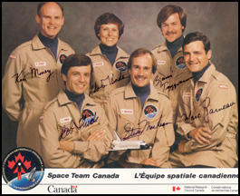

Home • Collection • Biography • Canadian Astronauts • Mission STS-42 • Microgravity Lab • Homecoming
Canadian Astronaut Program
Canada's space program began in 1962 with the launch of the satellite Alouette, making Canada the third nation in space. Canadian advances in space technology led to the development of the shuttle remote manipulation system or Canadarm for NASA. The Canadarm has been in use on space orbiters since 1981 to release and retrieve satellites in space. This partnership with NASA resulted in Canada being invited in 1982 to provide payload specialists for shuttle missions. Payload specialists are scientists or persons with special technical skills who undertake specific experiments or operations in space on behalf of scientists on the ground.
 |
|
Members of Canadian Space Team Included:
(from left to right) |
Insignias for the Canadian Space Program and |
In July of 1983, the National Research Council of Canada began a search for Canada's first group of astronauts. The Council decided that a broad public search would not only generate a great deal of publicity for the program, but would also produce the highest quality of applicants. Dr. Bondar was listening to CBC Radio when she heard the announcement that the National Research Council was looking for astronauts.
Qualifications included vestibular physiology, the study of the organs responsible for balance, which was Dr. Bondar's area of expertise. As well candidates were required to have some flying experience and Dr. Bondar had earned her pilot's license in 1968. Dr. Bondar had her application in the mail within 48 hours.
Over 4,300 applications were received! After hours of interviews, detailed medical examinations and intensive security checks, the final six members were chosen. On December 3, 1983, the day before her 38th birthday Dr Bondar received the call from the Canadian Research Council that she had been chosen a member of Canada's first astronaut program.
The other members included Marc Garneau who would be Canada's first astronaut in space in 1984 and fly aboard two other shuttle missions in 1996 and 2000, Steve MacLean who would follow Roberta into space in October 1992, Bjarni Tryggvason, Ken Money and Bob Thirsk.